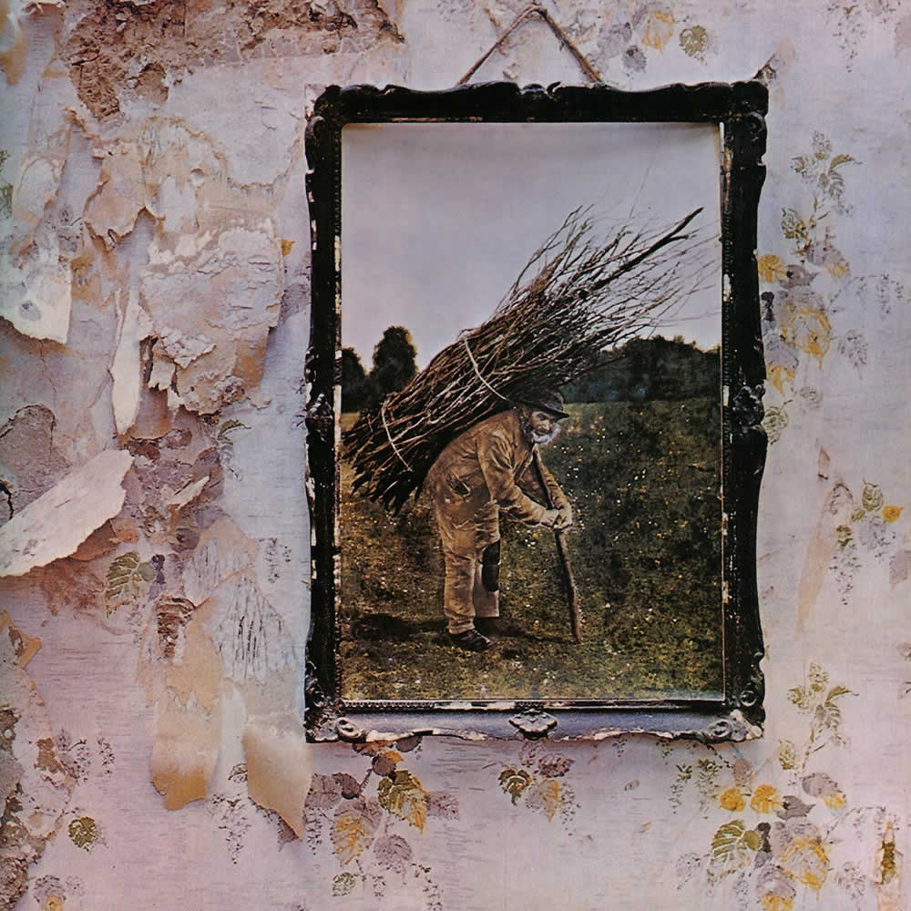

Menu
Todos los drechos reservados
-

Mothership es un álbum recopilatorio del grupo Led Zeppelin que salió a la venta el 13 de noviembre de 2007. El disco contiene dos CD con una selección remasterizada de las mejores canciones del grupo. Existe una Deluxe Edition que contiene, además, un DVD en el que se recogen videos en directo de la banda a lo largo de su carrera. Todos estos videos aparecen en el DVD oficial de Led Zeppelin editado en 2003.
Artista: Led Zeppelin
Fecha de publicación: 12 de noviembre de 2007
Grabación: 1968 - 1978
Discográfica: Atlantic, Rhino
Duración: 2:15:23
-

Led Zeppelin IV es el cuarto álbum de la banda Led Zeppelin, el cual no tiene título, es conocido principalmente como Led Zeppelin IV, para mantener la numeración de sus álbumes anteriores, aunque también recibe otros nombres: Zoso, Runes, Four Symbols, Four o incluso Untitled.
Artista: Led Zeppelin
Fecha de publicación: 8 de noviembre de 1971
Grabación: 1970 - 1971
Discográfica: Atlantic, Rhino
Duración: 42:39
-

Led Zeppelin II es el segundo álbum de estudio de la banda británica de hard rock, Led Zeppelin, lanzado en octubre de 1969 por la discográfica Atlantic Records. Las sesiones de grabación tuvieron lugar en diversas localidades del Reino Unido y Estados Unidos entre enero y agosto de ese mismo año.
Artista: Led Zeppelin
Fecha de publicación: 22 de octubre de 1969
Grabación: Desde enero a agosto de 1969 en varias localidades
Discográfica: Atlantic, Rhino
Duración: 41:42
Led Zeppelin